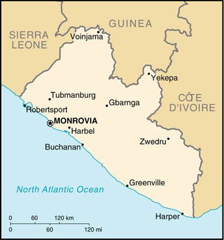

|
Liberia | |
| Introduction Geography People Government Economy Communications Transportation Military Transnational Issues | ||
|  | ||
| Liberia | Introduction | Top of Page |
| Background: | Seven years of civil strife were brought to a close in 1996 when free and open presidential and legislative elections were held. President TAYLOR now holds strong executive power with no real political opposition. The years of fighting coupled with the flight of most businesses have disrupted formal economic activity. A still unsettled domestic security situation has slowed the process of rebuilding the social and economic structure of this war-torn country. |
| Liberia | Geography | Top of Page |
| Location: | Western Africa, bordering the North Atlantic Ocean, between Cote d'Ivoire and Sierra Leone |
| Geographic coordinates: | 6 30 N, 9 30 W |
| Map references: | Africa |
| Area: |
total:
111,370 sq km
land: 96,320 sq km water: 15,050 sq km |
| Area - comparative: | slightly larger than Tennessee |
| Land boundaries: |
total:
1,585 km
border countries: Guinea 563 km, Cote d'Ivoire 716 km, Sierra Leone 306 km |
| Coastline: | 579 km |
| Maritime claims: | territorial sea: 200 NM |
| Climate: | tropical; hot, humid; dry winters with hot days and cool to cold nights; wet, cloudy summers with frequent heavy showers |
| Terrain: | mostly flat to rolling coastal plains rising to rolling plateau and low mountains in northeast |
| Elevation extremes: |
lowest point:
Atlantic Ocean 0 m
highest point: Mount Wuteve 1,380 m |
| Natural resources: | iron ore, timber, diamonds, gold, hydropower |
| Land use: |
arable land:
1%
permanent crops: 3% permanent pastures: 59% forests and woodland: 18% other: 19% (1993 est.) |
| Irrigated land: | 20 sq km (1993 est.) |
| Natural hazards: | dust-laden harmattan winds blow from the Sahara (December to March) |
| Environment - current issues: | tropical rain forest subject to deforestation; soil erosion; loss of biodiversity; pollution of coastal waters from oil residue and raw sewage |
| Environment - international agreements: |
party to:
Biodiversity, Desertification, Endangered Species, Nuclear Test Ban, Ozone Layer Protection, Ship Pollution, Tropical Timber 83, Tropical Timber 94
signed, but not ratified: Climate Change, Environmental Modification, Law of the Sea, Marine Dumping, Marine Life Conservation |
| Liberia | People | Top of Page |
| Population: | 3,225,837 (July 2001 est.) |
| Age structure: |
0-14 years:
43.21% (male 698,178; female 695,599)
15-64 years: 53.34% (male 840,103; female 880,403) 65 years and over: 3.45% (male 56,073; female 55,481) (2001 est.) |
| Population growth rate: | 1.92% (2001 est.) |
| Birth rate: | 46.55 births/1,000 population (2001 est.) |
| Death rate: | 16.36 deaths/1,000 population (2001 est.) |
| Net migration rate: |
-11 migrant(s)/1,000 population (2001 est.)
note: by the end of 1999, all Liberian refugees, who had fled the domestic strife, were assumed to have returned |
| Sex ratio: |
at birth:
1.03 male(s)/female
under 15 years: 1 male(s)/female 15-64 years: 0.95 male(s)/female 65 years and over: 1.01 male(s)/female total population: 0.98 male(s)/female (2001 est.) |
| Infant mortality rate: | 132.42 deaths/1,000 live births (2001 est.) |
| Life expectancy at birth: |
total population:
51.41 years
male: 49.96 years female: 52.91 years (2001 est.) |
| Total fertility rate: | 6.36 children born/woman (2001 est.) |
| HIV/AIDS - adult prevalence rate: | 2.8% (1999 est.) |
| HIV/AIDS - people living with HIV/AIDS: | 39,000 (1999 est.) |
| HIV/AIDS - deaths: | 4,500 (1999 est.) |
| Nationality: |
noun:
Liberian(s)
adjective: Liberian |
| Ethnic groups: | indigenous African tribes 95% (including Kpelle, Bassa, Gio, Kru, Grebo, Mano, Krahn, Gola, Gbandi, Loma, Kissi, Vai, and Bella), Americo-Liberians 2.5% (descendants of immigrants from the US who had been slaves), Congo People 2.5% (descendants of immigrants from the Caribbean who had been slaves) |
| Religions: | indigenous beliefs 40%, Christian 40%, Muslim 20% |
| Languages: | English 20% (official), some 20 ethnic group languages, of which a few can be written and are used in correspondence |
| Literacy: |
definition:
age 15 and over can read and write
total population: 38.3% male: 53.9% female: 22.4% (1995 est.) note: these figures are increasing because of the improving school system |
| Liberia | Government | Top of Page |
| Country name: |
conventional long form:
Republic of Liberia
conventional short form: Liberia |
| Government type: | republic |
| Capital: | Monrovia |
| Administrative divisions: | 13 counties; Bomi, Bong, Grand Bassa, Grand Cape Mount, Grand Gedeh, Grand Kru, Lofa, Margibi, Maryland, Montserrado, Nimba, River Cess, Sinoe |
| Independence: | 26 July 1847 |
| National holiday: | Independence Day, 26 July (1847) |
| Constitution: | 6 January 1986 |
| Legal system: | dual system of statutory law based on Anglo-American common law for the modern sector and customary law based on unwritten tribal practices for indigenous sector |
| Suffrage: | 18 years of age; universal |
| Executive branch: |
chief of state:
President Charles Ghankay TAYLOR (since 2 August 1997); note - the president is both the chief of state and head of government
head of government: President Charles Ghankay TAYLOR (since 2 August 1997); note - the president is both the chief of state and head of government cabinet: Cabinet appointed by the president and confirmed by the Senate elections: president elected by popular vote for a six-year term (renewable); election last held 19 July 1997 (next to be held NA July 2003) election results: Charles Ghankay TAYLOR elected president; percent of vote - Charles Ghankay TAYLOR (NPP) 75.3%, Ellen Johnson SIRLEAF (UP) 9.6%, Alhaji KROMAH (ALCOP) 4%, other 11.1% |
| Legislative branch: |
bicameral National Assembly consists of the Senate (26 seats; members elected by popular vote to serve nine-year terms) and the House of Representatives (64 seats; members elected by popular vote to serve six-year terms)
elections: Senate - last held 19 July 1997 (next to be held in NA 2006); House of Representatives - last held 19 July 1997 (next to be held in NA 2003) election results: Senate - percent of vote by party - NA%; seats by party - NPP 21, UP 3, ALCOP 2; House of Representatives - percent of vote by party - NA%; seats by party - NPP 49, UP 7, ALCOP 3, Alliance of Political Parties 2, UPP 2, LPP 1; note - the Alliance of Political Parties was a coalition of the LAP and the Liberia Unification Party or LUP |
| Judicial branch: | Supreme Court |
| Political parties and leaders: | All Liberia Coalition Party or ALCOP [Lusinee KAMARA]; Liberian Action Party or LAP [Cletus WOTORSON]; Liberian National Union or LINU [Henry MONIBA, chairman]; Liberian People's Party or LPP [Togba-Nah TIPOTEH, chairman]; National Democratic Party of Liberia or NDPL [Isaac DAKINAH]; National Patriotic Party or NPP [Charles Ghankay TAYLOR] - governing party; People's Progressive Party or PPP [Chea CHEAPOO, chairman]; Reformation Alliance Party or RAP [Henry Boimah FAHNBULLEH, chairman]; True Whig Party or TWP [Rudolph SHERMAN, chairman]; United People's Party or UPP [Gabriel Baccus MATTHEWS, chairman]; Unity Party or UP [Charles Clarke] |
| Political pressure groups and leaders: | NA |
| International organization participation: | ACP, AfDB, CCC, ECA, ECOWAS, FAO, G-77, IAEA, IBRD, ICAO, ICFTU, ICRM, IDA, IFAD, IFC, IFRCS, ILO, IMF, IMO, Inmarsat, Intelsat (nonsignatory user), Interpol, IOC, IOM, ITU, NAM, OAU, OPCW, UN, UNCTAD, UNESCO, UNIDO, UPU, WCL, WFTU, WHO, WIPO, WMO |
| Diplomatic representation in the US: |
chief of mission:
Ambassador William BULL
chancery: 5201 16th Street NW, Washington, DC 20011 telephone: [1] (202) 723-0437 FAX: [1] (202) 723-0436 consulate(s) general: New York |
| Diplomatic representation from the US: |
chief of mission:
Ambassador Bismarck MYRICK
embassy: 111 United Nations Drive, P. O. Box 10-0098, Mamba Point, Monrovia mailing address: use embassy street address telephone: [231] 226-370 through 226-380 FAX: [231] 226-148 |
| Flag description: | 11 equal horizontal stripes of red (top and bottom) alternating with white; there is a white five-pointed star on a blue square in the upper hoist-side corner; the design was based on the US flag |
| Liberia | Economy | Top of Page |
| Economy - overview: | A civil war in 1989-96 destroyed much of Liberia's economy, especially the infrastructure in and around Monrovia. Many businessmen fled the country, taking capital and expertise with them. Some returned during 1997. Many will not return. Richly endowed with water, mineral resources, forests, and a climate favorable to agriculture, Liberia had been a producer and exporter of basic products, while local manufacturing, mainly foreign owned, had been small in scope. The democratically elected government, installed in August 1997, inherited massive international debts and currently relies on revenues from its maritime registry to provide the bulk of its foreign exchange earnings. The restoration of the infrastructure and the raising of incomes in this ravaged economy depend on the implementation of sound macro- and micro-economic policies of the new government, including the encouragement of foreign investment. Recent growth has been from a low base, and continued growth will require major policy successes. |
| GDP: | purchasing power parity - $3.35 billion (2000 est.) |
| GDP - real growth rate: | 15% (2000 est.) |
| GDP - per capita: | purchasing power parity - $1,100 (2000 est.) |
| GDP - composition by sector: |
agriculture:
60%
industry: 10% services: 30% (2000 est.) |
| Population below poverty line: | 80% |
| Household income or consumption by percentage share: |
lowest 10%:
NA%
highest 10%: NA% |
| Inflation rate (consumer prices): | 5% (2000 est.) |
| Labor force - by occupation: | agriculture 70%, industry 8%, services 22% (1999 est.) |
| Unemployment rate: | 70% |
| Budget: |
revenues:
$NA
expenditures: $NA, including capital expenditures of $NA |
| Industries: | rubber processing, palm oil processing, diamonds |
| Industrial production growth rate: | NA |
| Electricity - production: | 432 million kWh (1999) |
| Electricity - production by source: |
fossil fuel:
100%
hydro: 0% nuclear: 0% other: 0% (1999) |
| Electricity - consumption: | 401.8 million kWh (1999) |
| Electricity - exports: | 0 kWh (1999) |
| Electricity - imports: | 0 kWh (1999) |
| Agriculture - products: | rubber, coffee, cocoa, rice, cassava (tapioca), palm oil, sugarcane, bananas; sheep, goats; timber |
| Exports: | $55 million (f.o.b., 2000 est.) |
| Exports - commodities: | diamonds, iron ore, rubber, timber, coffee, cocoa |
| Exports - partners: | Belgium 53%, Switzerland 9%, US 6%, France 4% (1999) |
| Imports: | $170 million (f.o.b., 2000 est.) |
| Imports - commodities: | fuels, chemicals, machinery, transportation equipment, manufactured goods; rice and other foodstuffs |
| Imports - partners: | South Korea 30%, Italy 24%, Japan 15%, Germany 9% (1999) |
| Debt - external: | $3 billion (1999 est.) |
| Economic aid - recipient: | $200 million pledged (1998) |
| Currency: | Liberian dollar (LRD) |
| Currency code: | LRD |
| Exchange rates: |
Liberian dollars per US dollar - 39.8100 (December 2000), 41.0483 (2000), 41.9025 (1999), 41.5075 (1998), 1.0000 (officially fixed rate 1940-97); market exchange rate: Liberian dollars per US dollar - 40 (December 1998), 50 (October 1995)
note: until December 1997, rates were based on a fixed relationship with the US dollar; beginning in January 1998, rates are market determined |
| Fiscal year: | calendar year |
| Liberia | Communications | Top of Page |
| Telephones - main lines in use: | 6,000 (1997) |
| Telephones - mobile cellular: | 0 (1995) |
| Telephone system: |
general assessment:
telephone and telegraph service via microwave radio relay network; main center is Monrovia
domestic: NA international: satellite earth station - 1 Intelsat (Atlantic Ocean) |
| Radio broadcast stations: | AM 0, FM 6, shortwave 4 (1999) |
| Radios: | 790,000 (1997) |
| Television broadcast stations: | 2 (plus four low-power repeaters) (2000) |
| Televisions: | 70,000 (1997) |
| Internet country code: | .lr |
| Internet Service Providers (ISPs): | 1 (2000) |
| Internet users: | 300 (2000) |
| Liberia | Transportation | Top of Page |
| Railways: |
total:
490 km (328 km single track); note - three rail systems owned and operated by foreign steel and financial interests in conjunction with the Liberian Government; one of these, the Lamco Railroad, closed in 1989 after iron ore production ceased; the other two were shut down by the civil war; large sections of the rail lines have been dismantled; approximately 60 km of railroad track was exported for scrap
standard gauge: 345 km 1.435-m gauge narrow gauge: 145 km 1.067-m gauge |
| Highways: |
total:
10,600 km
paved: 657 km unpaved: 9,943 km note: (there is major deterioration on all highways due to heavy rains and lack of maintenance) (1996 est.) |
| Waterways: | none |
| Ports and harbors: | Buchanan, Greenville, Harper, Monrovia |
| Merchant marine: |
total:
1,478 ships (1,000 GRT or over) totaling 49,456,361 GRT/76,620,648 DWT
ships by type: barge carrier 3, bulk 324, cargo 97, chemical tanker 163, combination bulk 20, combination ore/oil 38, container 245, liquefied gas 97, multi-functional large-load carrier 4, passenger 24, petroleum tanker 310, refrigerated cargo 74, roll on/roll off 19, short-sea passenger 3, specialized tanker 12, vehicle carrier 45 note: includes some foreign-owned ships registered here as a flag of convenience: Argentina 8, Australia 1, Ashmore and Cartier Islands 1, Austria 5, Bermuda 5, Belgium 5, Burma 1, Brazil 8, Canada 1, China 28, Chile 7, Costa Rica 8, Cyprus 27, Denmark 4, Ecuador 1, Germany 117, Greece 83, Hong Kong 54, Croatia 9, Indonesia 2, India 8, Israel 1, Italy 8, Japan 85, South Korea 8, Latvia 15, Monaco 28, Mexico 6, Malaysia 1, Nigeria 1, Netherlands 7, Norway 86, Netherlands Antilles 1, NZ 1, Poland 2, Portugal 2, Philippines 1, Russia 22, Saudi Arabia 20, South Africa 1, Slovenia 1, Singapore 30, Spain 1, Sweden 8, Switzerland 23, UAE 5, Taiwan 10, UK 15, US 85, Uruguay 1, Vietnam 1 (2000 est.) |
| Airports: | 46 (2000 est.) |
| Airports - with paved runways: |
total:
2
over 3,047 m: 1 1,524 to 2,437 m: 1 (2000 est.) |
| Airports - with unpaved runways: |
total:
44
1,524 to 2,437 m: 3 914 to 1,523 m: 5 under 914 m: 36 (2000 est.) |
| Liberia | Military | Top of Page |
| Military branches: | Army, Air Force, Navy |
| Military manpower - availability: | males age 15-49: 715,753 (2001 est.) |
| Military manpower - fit for military service: | males age 15-49: 385,460 (2001 est.) |
| Military expenditures - dollar figure: | $1 million (FY98) |
| Military expenditures - percent of GDP: | 2% (FY98) |
| Liberia | Transnational Issues | Top of Page |
| Disputes - international: | large refugee population from civil war in Sierra Leone |
| Illicit drugs: | increasingly a transshipment point for Southeast and Southwest Asian heroin and South American cocaine for the European and US markets |
{kind=link}